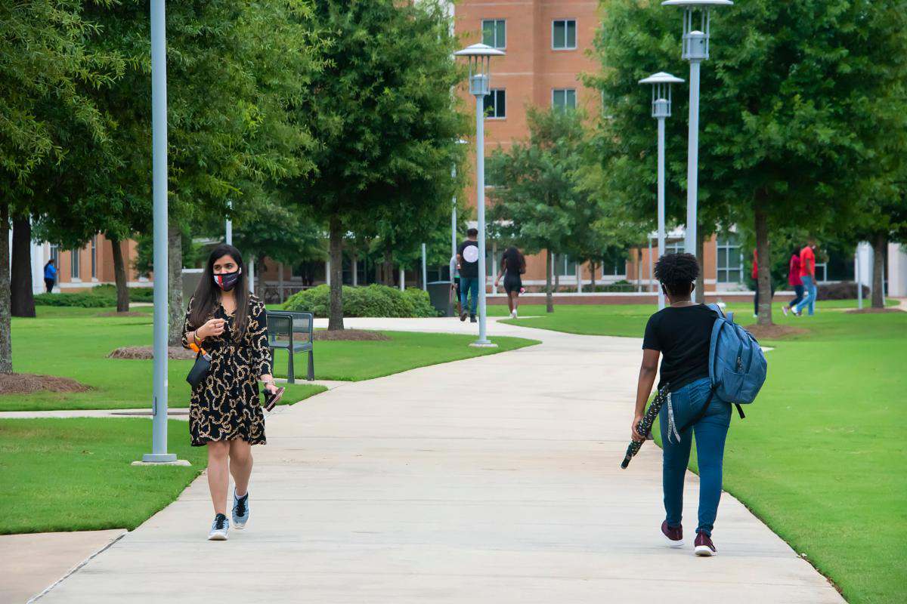

-
Commencement set for Dec. 12
Auburn University at Montgomery looks forward to celebrating the success of its Spring, Summer and Fall 2020 graduates at commencement on Saturday, Dec. 12, at 10 a.m. at Garrett Coliseum. All graduates, guests, faculty, and staff are required to properly wear facemasks and maintain social distancing of 6-feet among non-household members at all times.
-

Auburn University
Auburn University at Montgomery has modified its Spring 2021 semester academic calendar, including a delayed start to January classes that will replace the traditional spring break. The change supports university efforts to reduce risks of potential COVID-19 transmission associated with holiday travel. Under the revised calendar, Spring semester classes will begin on Wednesday, Jan. 20, 2021 – a week later than originally scheduled.